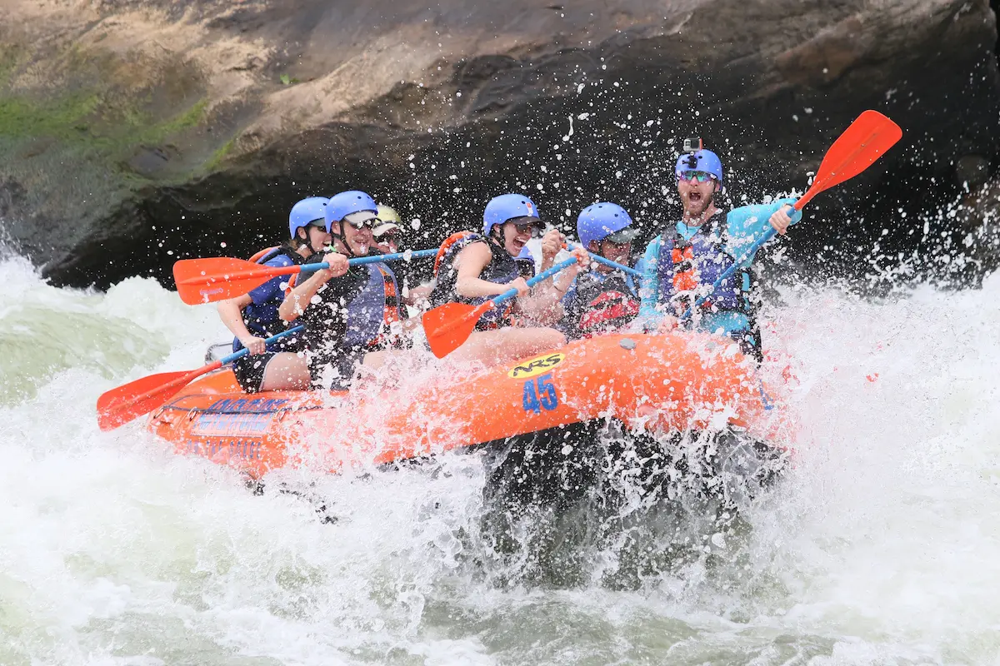

Trips
White Water Rafting Trips
Our white water rafting trips are incredible! We take you on some exciting rapids and lots of crazy turns. We help you feel the thrill of riding those big rapids while still being safe. This trip is a fantastic trip for those seeking an adrenaline rush and the thrill of a lifetime. We do not recomend young children on this trip.
Canoe Trips

Our canoe trip is a memorable one. We take you down the river in a canoe of your choice. You can float with a partner or alone. Being in a canoe is differnet then a raft. You are closer to the water and feel more one with it. On our canoe trips we are able to ride the river and enjoy the breathtaking beautiy that surrounds it.
Calm Water Trips

Our calm water trips are breathtaking in their own way. You are able to experiance the river in a calmer way. There are amazing views all around and the river is right beneith you. On our trip there are places to climb out and play inthe water. This trip is fantastic for family events with little ones or older folks who are not quite up for big rapids.